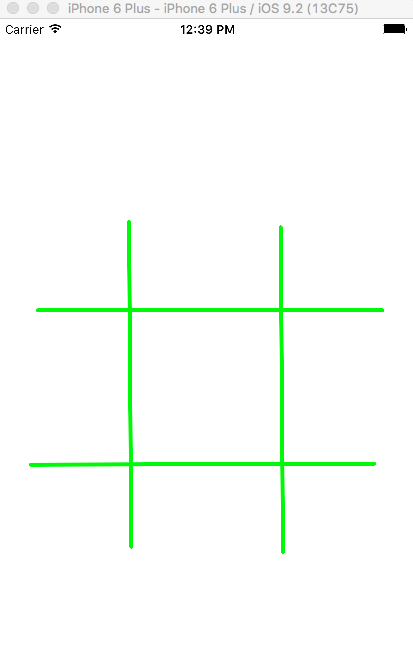

The purpose of this assignment is to have you do basic Swift programing using an app that is based on touch and drawing lines and circles or whatever you want to draw. The assignment is based on Tutorials 18 and 19.
In this assignment we will build a tic-tac-toe game based on the pencil-and-paper metaphore. (Everything done with touch gestures as though it was with pencil on a piece of paper.). There is no AI in this game. This time it is a two player game and the app just provides the game board but does not make any decisions about rules or counter moves.
This assignment is based on 8 specific design requirements numbered R1.1... R1.8. Two marks each for a total of 16 marks.
Marking is based on requirements as follows:
| Req Type | Marking |
|---|---|
| R0.x | Assignment gets 0 if any critical submission (red) |
| R0.x | You lose 2 marks for each good practice (orange) |
| R0.x | You earn 2 marks for each design requirement (green) satisfied and well implemented; 1 mark if it's partly met or met but not well implemented; and 0 if it's not met. |
The following submission and good practice requirements will pertain to all your assignments regardless of what your application is supposed to do. These requirements are to ensure that your code is readable, robust and follows good software engineering practrices.
R0.0) IMPORTANT Uniqueness Requirement: The solution and code you submit MUST be unique. That is, it cannot be a copy of, or be too similar to, someone else's code, or other code found elsewhere. A mark of 0 will be assigned to any assignment that is judged by the instructors or the TA's not to be unique. (You are free, however, to use any code posted on our course web site in your assignments including tutorial demo code or answer code.)
R0.1) CODE ORGANIZATION, SUBMISSION AND COMPILATION: Your code should be submitted to culearn as an Android Studio 3.x.x project with API level 28 and min API level 24 similar to that of the demo code supplied for the class exercises. IMPORTANT: You should do a Build->Clean Project before you submit the code. This will significantly reduce the size and provide us with a starting place for a clean compile. Zip up the files using .zip format (not other compression formats.) The markers must be able to compile your code using the Android Studio 3.x.x. Your code should run on either an android virtual device (AVD, API level 28) or a real device but need not be tested on both. You MUST provide a readme.txt file explaining which device you tested your code on and any special instructions you want the TA to know before they start marking.
1) The marker will open your project in android studio. (If you compress your code then provide a .zip file only (we will not support .rar, .tar, ... etc.) Only .zip files.
2) The marker will then Build->Rebuild Project to rebuild (compile) your project and look at your source files, your readme.txt files and run your code. If the code compiles they will test it on a device or AVD.
3) Once your code launches it will be evaluated against the assignment requirements.
Be aware no partial marks will be awarded to assignments that don't compile and run. Assignments are intentionally broken down into many small design requirements. It is better to have running code that satisfies some of them than to have code that won't compile and run but claims to address more requirements.
The following good practice requirements will be in effect for all assignments.
R0.2) Variable and Function names: All of your variables, methods and classes, XML tags etc, should have meaningful names that reflect their purpose. Don't follow the convention common in math courses where they say: "let x be the number of customers and let y be the number of products...". Instead call your variables numberOfCustomers or numberOfProducts. Your program should not have any variables called "x" unless there is a good reason for them to be called "x". (It's OK to call simple for-loop counters i,j and k etc. when the context is clear and very localized.)
R0.3) Encapsulation: All variables in your object-oriented classes should be private unless a specific design requirements asks for them to be public (which is unlikely). It is good programming practice to design objects that provide services through public methods. How they store their data is their own private business. Note having public static constants or enums defined is of course ok and, in fact, encouraged.
R0.4) Robustness: Your program should never crash when is is being run for marking. Make sure you have no null pointer exceptions or attempt to access an array or data structure out of bounds. (We get especially annoyed by out of bounds errors since they still seem to be the number one bug in programming and have been for a long long time!) Android, iOS specific: Your code should not crash as a result of the user rotating their device between landscape and portrait orientation.
R0.5) Code Comment: Comments in your code must coincide with what the code actually does. It is a very common bug to modify or cut-and-paste code and forget to modify the comments and end up with comments that say one thing and code that actually does another. Don't over-comment your code; instead choose good variable, constant, tag names, and method names that make the code "self commenting".
R0.6) Hard Coded Constants: Your code should not have hard coded constants used in places like if-statements or function parameters. Your constants should have meaningful names. Don't have if statements like if(ball.getLocationX() + 40 < 100) ...; instead your code should look more like if(ball.getLocationX() + ballRadius < rightBoundaryX) ...; If necessary create local variables that reflect the use of the constant. e.g. double rightBoundaryX = 100; then you can refer to that in your program logic. (There is no prize for having fewer lines of code -if more lines makes your code more readable then use more lines).
R0.7) Nested Expressions: Don't use nested expressions that return results but obscure what the result or computation means. For example don't use expressions like:
totalView.setText(Double.parseDouble(view2.getText()) * (1 + Double.parseDouble(view3.getText())));
Instead do:
double price = Double.parseDouble(priceView.getText();
double tipPercentage = Double.parseDouble(tipPercentageView.getText();
//1...100
double totalPrice = price * (1+tipPercentage/100);
totalView.setText(totalPrice);
That is, use temporary variables whose names effectively comment the code.
R0.8) String constants: Strings that appear in the user interface labels should be represented as XML string resources. So if you wanted to change the string that appears on the UI for a label say, you would only need to change the XML file. Constants used in your code should be defined and scoped appropriately (e.g. as final static values in java).
VERY IMPORTANT: Any demo code or sample code fragments provided may have bugs (although none are put there intentionally). It is part of your task to identify errors in the code and in the requirements. Please report them so they can be fixed and discussed in class.
We want you to build an IOS-based tic tac toe game that is played by drawing the game board with your finger and then tapping on empty squares to place X's and O's. We are using the pencil-on-paper metaphor meaning the user gets to draw the board. We are thus NOT going to employ buttons or menus but do everything by drawing on the screen and using simple on-screen tap gestures.
R1.1 The game should be built with Xcode 11.x, and Swift 5 or later. The game should provide a two-player tic tac toe game played by two people on the same device taking turns to tap the board to placde and X or O token draw on the screen (the application does not play as one of the opponents).
R1.2 When the game launches the screen should be completely empty. A user should then be able to draw the game board by drawing four individual lines using their finger. Once 4 lines are drawn it the app should interpret that as a game board with the line intersections defining the 9 playing square. (Note we will assume the user draws a reasonable board and you don't have to write code to reject a poorly drawn board.)

R1.3 Once the game board is drawn the app should then interpret taps in the 9 areas. The first tap should place an "X" on the board. The next tap should place a "O" etc.
R1.4 For an "X" the app should draw something that looks like an "X". It could be a character or a couple of lines that cross. Something that looks like an "X"
R1.5 For an "O" the app should draw something that looks like an "O". It could be a character or a circle shape. Something that looks like an "O".
R1.6 The app should not allow you to play on an already occupied square.
R1.7 The application does NOT need to figure out who won. It does however need to determine when all the squares have been played on (see next requirement).
R1.8 Once all the squares have been played on the next tap should reset the game and leave only a blank screen ready for the user to draw another game board. (If someone wins with empty squares left we will assume the users will just play some additional moves to fill the board.)